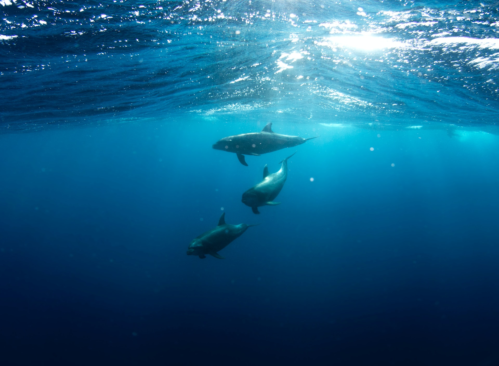

말로는 형용할 수 없는 방식으로 찾아낸, 말로는 형용할 수 없는 방법으로 도달한, 말로는 형용할 수 없이 젖은 세계, 물의 노래.
이제 목소리들의 연주하는 푸가, 와글와글한 해명, 돌이킬 수 없는 대재앙에 관한, 파괴를 앞둔 세계에 관한, 해일처럼 밀려드는 무기력함, 발작 같은 절망, 끝으로 치달려 작아지는 노랫소리, 또 다시 터져 나오는 단어들.
그리고는 한 줄기 희망, 겹겹이 접힌 세월의 함의들로부터, 침잠된 차원으로부터 유령 같은 지구를 재발견하고, 평행선들의 팽팽한 당김, 깊디깊은 노력, 의지의 회전, 팽팽한 의지력의 긴장된 싸움, 싸움. 새로운 지구가 끌어올려져 대체되고, 돌고래들은 사라졌다.
그리고 깜짝 놀랄 정도로 선명한, 단 하나의 목소리.
"이 어항은 '인간 보존을 위한 캠페인'에서 감사의 뜻으로 드리는 선물입니다. 안녕히 계십시오."
그리고 길고, 무겁고, 완벽한 회색의 몸체들이 헤아릴 수 없는 미지의 심해 속으로 사라져가는 소리. 그들은 소리 죽여 낄낄거리며 웃고 있었다.